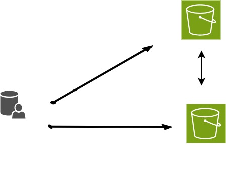

All in One View
Content from What is Rclone
Last updated on 2026-08-23 | Edit this page
Overview
Questions
- What is Rclone?
- Why might you use this application?
- How might Rclone help you manage your data?
Objectives
- Basic understanding of Rclone usage
- Know where to download the software and documentation
- Know where to get help and examples
Introduction: What is Rclone?
Rclone is a command-line program for managing files on cloud storage. It is primarily used for transferring, syncing, and moving data between local systems and various cloud storage services.

What can you do with Rclone?
Which statement best describes what Rclone does?
A. Rclone runs continuously in the background, syncing your computer
with the cloud in real time, like a Dropbox or OneDrive desktop
client.
B. Running rclone copy once is a complete backup strategy:
it keeps the destination in sync with every future change to the
source.
C. Rclone transfers, syncs, or moves files between local and cloud
storage, or between two cloud storage services, each time you run a
command.
D. Rclone requires mounting cloud storage as a local drive before it can
move any files.
The answer is C.
Rclone is command-driven. It acts when you run
rclone copy, sync, or move, not
automatically in the background.
- A is incorrect. Unlike a desktop sync client, rclone does not watch for changes and act on its own. You have to run a command (or schedule one) each time you want it to check for changes.
- B is incorrect.
copynever deletes files at the destination, so the destination can accumulate files that no longer exist at the source. A singlecopydoes not guarantee the two locations match:sync, covered later in this lesson, is designed for that. - D is incorrect. Mounting is an optional, more advanced feature. Copy, sync, and move all work directly on cloud storage without mounting anything.
How do you think you might use Rclone?
Think of a file-transfer task you currently do by hand: dragging files between a laptop and an external drive, uploading through a browser, or copying the same files to more than one place.
- Would copy, sync, or move fit that task best, and why?
- Are you moving files between two machines, two cloud services, or a machine and a cloud service?
- Is there a point in your current process where you’re not sure whether a transfer actually finished, or whether you’d notice if it didn’t?
Share one example in the chat or with a neighbor.
Rclone command syntax
rclone [command] source:source-folder destination:destination-folder
List of Rclone commands: rclone.org/commands/
Real-World Scenarios for Using Rclone
Understanding how Rclone works can be easier if you relate it to everyday tasks. Here are a few simple examples:
Copy:
Imagine you have a folder of vacation photos on your laptop and want to back them up to Google Drive without removing them from your computer. Usingrclone copywill duplicate your pictures to the cloud, leaving the originals intact.Sync:
Suppose you’re working on a project at home and in the office. You keep a copy of your project folder on your computer and a backup in the cloud. Each time you runrclone sync, it copies any local changes to the cloud folder and removes any cloud files that are no longer present locally, keeping the two folders identical.Move:
After completing a project, you can free up space on your computer by archiving files to the cloud. Therclone movecommand transfers your project files to cloud storage and deletes them from your local drive.
These examples show how each rclone command can help you manage your files based on your needs.
- Uses for Rclone
- Where to find versions for specific operating systems
- Where to get help
Content from Creating and Configuring Remote Connections
Last updated on 2026-08-23 | Edit this page
Overview
Questions
- What is an rclone remote, and how is it different from a local path?
- How do you create, list, and verify a remote connection?
Objectives
- Understand what a remote is and how it differs from a local connection.
- Distinguish a local filesystem path from a remote path in the form
remote:path. - Use
rclone configto create a remote connection. - Use
rclone listremotesandrclone lsd remote:to confirm a remote is configured and reachable.
Creating a remote connection
A remote is a named storage configuration that rclone uses to connect
to a storage location, such as a cloud service or another machine. You
create a remote once using rclone config, then refer to it
by name in commands as remote:path (for example,
mybox:documents). This is different from a local filesystem
path, such as /Users/name/documents or
C:\Users\name\Documents, which refers to storage on your
own machine and has no remote: prefix.
Common remote types include cloud storage services such as Box, Google Drive, and Amazon S3, as well as other servers accessed over protocols such as SFTP.
flowchart LR
accTitle: Rclone connects a local machine to one or more named remotes
accDescr {
A local machine connects through rclone to three example remotes, named mybox, mygdrive, and mys3, each labeled with the storage provider it points to. A dashed line shows that rclone can also transfer files directly between two remotes without passing through the local machine.
}
L["Local machine<br>/Users/you/documents"]
B["mybox:<br>(Box)"]
G["mygdrive:<br>(Google Drive)"]
S["mys3:<br>(Amazon S3)"]
L -- "copy / sync / move" --> B
L -- "copy / sync / move" --> G
L -- "copy / sync / move" --> S
B <-. "copy (remote-to-remote)" .-> GCustom client IDs: Google Drive vs. Box
By default, rclone uses a shared client_id for both
Google Drive and Box, so most learners do not need to set up their own
credentials to complete this lesson.
For Google Drive, rclone’s shared client ID is being
retired and will stop working during 2026. Create and configure your own
client_id and client_secret to avoid an
interruption. See Making your
own client ID in the rclone documentation for details.
For Box, the Box
documentation notes that custom client credentials can normally be
left blank. Most users do not need to set up their own
client_id for Box; only do so if you hit rate limits or
your organization requires it.
Configuring a remote with rclone config
The rclone config command starts an interactive session
where you create, edit, and manage remotes.
The first time you run it, with no remotes configured yet, you’ll see:
OUTPUT
No remotes found, make a new one?
n) New remote
s) Set configuration password
q) Quit config
n/s/q>Choose n for a new remote. Rclone asks for a name, then
the storage type from a long list of supported providers:
OUTPUT
Enter name for new remote.
Option Storage.
Type of storage to configure.
Choose a number from below, or type in your own value.
1 / 1Fichier
\ (fichier)
2 / Akamai NetStorage
\ (netstorage)
...
7 / Box
\ (box)
...
36 / Local Disk
\ (local)
...Type mybox for the name and box for the
type. Accept the defaults for client_id and
client_secret unless the callout above tells you otherwise.
For a remote that needs authorization, like Box or Google Drive, rclone
will next either open a browser window for you to sign in, or, on a
machine without a browser available, print a URL and code to enter on
another device — see Configuring
using rclone authorize in the rclone documentation for that
case.
Once you’ve stepped through the provider-specific prompts, rclone shows a summary and asks you to confirm:
OUTPUT
Configuration complete.
Options:
- type: box
Keep this "mybox" remote?
y) Yes this is OK (default)
e) Edit this remote
d) Delete this remoteAnswer y, then q to quit the config
session. Your new remote is saved.
Checking your configuration
Once a remote exists, use these commands to confirm it’s there and working. None of them transfer or change any files, so they’re safe to run at any time.
List every remote rclone knows about:
OUTPUT
mybox:Find out where the configuration file itself lives — worth knowing, since it’s the file that holds your credentials (see the callout above):
OUTPUT
Configuration file is stored at:
/Users/you/.config/rclone/rclone.confList the contents of the remote itself:
OUTPUT
64 2026-08-23 13:27:28 -1 rclone-workshoplsd lists directories only and never transfers a file,
which makes it a safe way to confirm a remote is reachable before you
run a real transfer command.
Rclone command flags
There are numerous command flags but these three are especially worth remembering:
- -n, –dry-run Do a trial run with no permanent changes
- -i, –interactive Enable interactive mode
- -v, –verbose count Print lots more stuff (repeat for more) - useful when debugging
Configure and verify your own remote
Using rclone config, create a remote connected to your
own Box account (or whichever storage your instructor has set up for
this workshop). Then:
- Confirm it appears in
rclone listremotes. - Run
rclone lsd remote:to see its contents.
If rclone lsd returns an error, run
rclone listremotes first — a typo in the remote name is the
most common cause.
Follow the prompts: n for a new remote, a name such as
mybox, box for the type, defaults for the
client ID and secret, and complete the authorization step. Confirm with
y, then q to quit.
OUTPUT
mybox:If your Box account has no folders yet, this returns nothing — that’s expected, and still confirms the remote is reachable.
Documentation specific to each remote
Rclone includes extensive documentation that is specific to particular remotes.
Examples:
- Box: rclone.org/box/
- Google Drive: https://rclone.org/drive/
- S3 bucket: https://rclone.org/s3/
See the Learner Reference page for a full command and documentation reference.
- A remote is a named storage configuration; a local path has no
remote:prefix. - Use
rclone configto create, edit, and manage remotes. - Use
rclone listremotes,rclone config file, andrclone lsd remote:to confirm a remote is set up and reachable, without transferring anything. - Google Drive’s shared client ID is being retired in 2026 and needs your own credentials; Box’s client ID can normally stay blank.
Content from File Transfers, Listing, and Verification
Last updated on 2026-08-23 | Edit this page
Overview
Questions
- How are files moved or copied?
- What does the rclone sync do?
- How do you see what is already in the destination?
Objectives
- Understand the difference between copy and sync
- Be able to list what is already in the destination
- Compare rclone command syntax between Linux/macOS and Windows (including WSL2)
Moving files around
Rclone is most frequently used to move files, individually or as a group from one place to another.
Specifying source and destination paths
Moving, syncing and knowing what is already there
Lists contents of a remote:
Copy local files to remote:
Sync local files to remote:
Filtering
Many rclone commands resemble their Unix counterparts, such as
ls. Rclone selects which files a command applies to using
flags such as --include and --exclude, rather
than shell wildcard expansion, so quote the pattern (for example,
--include "*.txt") to keep your shell from expanding it
first.
Some Examples:
Copying local files to an external drive (Windows using the Linux subsystem)
Copying files from Google Drive and filtering for
*.txt
BASH
rclone copy rclone-intro-google:rclone-intro-google rclone-intro-box:rclone-intro --include "*.txt" Checking a result before running by using the -n
flag
OUTPUT
2025/02/09 14:52:11 NOTICE: Beans, Snap and Italian – Pieces, Green and Wax - National Center for Home Food Preservation.pdf: Skipped copy as --dry-run is set (size 91.581Ki)
2025/02/09 14:52:11 NOTICE: For Safety's Sake - National Center for Home Food Preservation.pdf: Skipped copy as --dry-run is set (size 69.982Ki)
2025/02/09 14:52:11 NOTICE: Preserving_Food__Using_Pressure_Canners.pdf: Skipped copy as --dry-run is set (size 3.839Mi)
2025/02/09 14:52:11 NOTICE: Selecting the Correct Processing Time - National Center for Home Food Preservation.pdf: Skipped copy as --dry-run is set (size 123.316Ki)
2025/02/09 14:52:11 NOTICE: test01.txt.docx: Skipped copy as --dry-run is set
2025/02/09 14:52:11 NOTICE: USDA-Complete-Guide-to-Home-Canning-2015-revision.pdf: Skipped copy as --dry-run is set (size 16.518Mi)
2025/02/09 14:52:11 NOTICE: Potatoes, Sweet – Pieces or Whole - National Center for Home Food Preservation.pdf: Skipped copy as --dry-run is set (size 87.602Ki)
2025/02/09 14:52:11 NOTICE:
Transferred: 21.079 MiB / 21.079 MiB, 100%, 0 B/s, ETA -
Checks: 3 / 3, 100%
Transferred: 8 / 8, 100%
Elapsed time: 2.0sPredict, then verify
You have a disposable rclone-workshop folder with these
files:
OUTPUT
source/notes.txt
source/data.csv
source/photo.jpg
dest/old-report.pdfdest/old-report.pdf does not exist in
source.
Before running anything, predict the answers:
- Will
rclone copy source dest --include "*.txt" --dry-runtouchold-report.pdf? - Will
rclone sync source dest --dry-runtouchold-report.pdf? If so, how?
Then run both commands against your own disposable folder and check your predictions against the real output.
--dry-run never changes anything on disk — it only
reports what would happen, which makes it safe to run as many
times as you like while you’re predicting.
OUTPUT
2026/08/23 13:37:13 NOTICE: notes.txt: Skipped copy as --dry-run is set (size 14)
2026/08/23 13:37:13 NOTICE:
Transferred: 14 B / 14 B, 100%, 0 B/s, ETA -
Checks: 0 / 0, -, Listed 1
Transferred: 1 / 1, 100%
Elapsed time: 0.0scopy never mentions old-report.pdf — it
only ever adds or updates files, so anything already at the destination
but missing from the source is simply left alone.
OUTPUT
2026/08/23 13:37:14 NOTICE: notes.txt: Skipped copy as --dry-run is set (size 14)
2026/08/23 13:37:14 NOTICE: photo.jpg: Skipped copy as --dry-run is set (size 6)
2026/08/23 13:37:14 NOTICE: data.csv: Skipped copy as --dry-run is set (size 6)
2026/08/23 13:37:14 NOTICE: old-report.pdf: Skipped delete as --dry-run is set (size 34)
2026/08/23 13:37:14 NOTICE:
Transferred: 26 B / 26 B, 100%, 0 B/s, ETA -
Checks: 1 / 1, 100%, Listed 4
Deleted: 1 (files), 0 (dirs), 34 B (freed)
Transferred: 3 / 3, 100%
Elapsed time: 0.0ssync reports old-report.pdf as a file it
would delete, because sync makes the destination an
exact mirror of the source — this is exactly why sync exercises always
need --dry-run or --interactive first.
Different operating systems have slightly different syntax
Windows syntax:
- Linux and macOS:
BASH
rclone copy rclone-intro-box:rclone-intro rclone-intro-google:rclone-intro-google
rclone copy rclone-intro-box:rclone-intro rclone-intro-google:rclone-intro-google -n Windows Subsystem for Linux (WSL2) syntax:
See the Learner Reference page for valid remote names, subcommand syntax, and platform-specific notes.
- Difference between Copy and Sync
- See what is already in the destination
-
--dry-runshows what a command would do, including deletions, without changing anything on disk
Content from Choosing the Right Rclone Command: Copy, Sync, or Move
Last updated on 2026-08-23 | Edit this page
Overview
Questions
- What is the difference between copy, sync and move?
- When should you choose one command over the others?
Objectives
- Be able to pick the most appropriate command to move file(s)
- Determine which command is most appropriate for different file management scenarios.
Copy, Sync, or Move
When managing your files with rclone, you have three primary commands: copy, sync, and move. Each command handles your data differently, so it’s important to know their unique behaviors to choose the right one for your task.
| Command | Changes source | Adds/updates at destination | Deletes at destination | Safest for… |
|---|---|---|---|---|
copy |
No | Yes | No | Adding or updating files without any risk of deleting something |
sync |
No | Yes | Yes — removes anything not in the source | Making the destination an exact, up-to-date mirror of the source |
move |
Removes files after a successful transfer | Yes | No | Relocating files to free up space at the source |
Copy
The copy command copies files from the source to the
destination. It compares files by size, modification time, or checksum,
and transfers only those that are new or have changed. Existing
destination files that aren’t present at the source are left in place —
copy does not delete them. Because of this,
copy does not guarantee the destination matches the source,
so running it once is not, by itself, a complete backup strategy.
Syntax:
Notes:
- Only the contents of a directory are copied — not the directory itself.
- Use the
copytocommand for copying single files. - If the destination path does not exist, it will be created.
Sync
The sync command makes the destination an exact mirror of the source. It copies new or updated files and deletes files in the destination that are not present in the source. Use sync when you need both locations to be identical, but be cautious as it can remove files from the destination.
Syntax:
Move
The move command transfers files from the source to the destination and then deletes them from the source after a successful transfer. This is useful when you want to relocate files rather than keep copies in both places.
Important Note: Since this can cause data loss, test first with the –dry-run or the –interactive/-i flag.
Syntax:
Choose the right command
For each scenario, decide whether copy,
sync, or move is the safest choice, and
explain why.
- You want your Box
photosfolder to always exactly match a folder on your laptop, including removing anything you’ve deleted locally. - You’ve finished a project and want to free up space on your laptop by relocating the files to the cloud.
- You want to hand a colleague a copy of your files without touching anything already in their folder, or removing anything from yours.
Ask two questions for each scenario: should anything be deleted anywhere, and should the files still exist in both places afterward?
-
sync — an exact mirror, including deletions, is
exactly what sync does. Run it with
--dry-runor--interactivefirst, since it can delete files. - move — moves the files and removes them from your laptop only after the transfer to the cloud succeeds.
- copy — adds and updates files at the destination without deleting anything at either end.
See the Learner Reference page for a full command and documentation reference.
- Different ways to move or copy files: copy, sync, move
- Understand the difference between copy and sync
-
syncis the only one of the three that can delete files at the destination
Content from Optional: Configuring rclone on a Headless Machine
Last updated on 2026-08-23 | Edit this page
Overview
Questions
- What is a headless machine, and why does it need special configuration?
- How do you authorize a remote when no browser is available?
Objectives
- Identify when a machine is headless and needs a browser-free authorization flow.
- Use
rclone authorizeto complete configuration on a headless machine.
This episode is optional
Skip this episode if you’re setting up rclone on your own laptop or
desktop — you have a browser, and the standard
rclone config flow from Creating and Configuring Remote
Connections is all you need. Come back to this episode only if you
need to configure rclone on a machine with no browser available, such as
an HPC cluster, a cloud VM, or the Windows Subsystem for Linux
(WSL2).
What is a headless machine?
A headless machine is one with no browser available to complete authorization in. For example, you might be using the Windows Subsystem for Linux (WSL2), or you’ve logged into a remote machine (an HPC cluster, a cloud VM, etc.) over SSH.
Some rclone configurations — those involving OAuth2, such as Box and Google Drive — normally open a browser to complete authorization. On a headless machine, there’s no browser to open, so rclone offers an alternative: authorize from a different machine that does have a browser.
Authorizing without a browser
When rclone config reaches the authorization step on a
headless machine, it prints a command to run instead of opening a
browser, using rclone authorize:
Run that command on a different machine — one that does have
a browser, such as your laptop — and it walks you through the same
sign-in flow, then prints a token to paste back into the headless
machine’s rclone config session.
Rclone’s documentation includes a full walkthrough of this exact process: Configuring using rclone authorize.
Headless or not?
For each situation, decide whether you’d need
rclone authorize, or whether the standard
rclone config flow is enough.
- Configuring rclone on your own laptop, which has a web browser installed.
- Configuring rclone after logging into a university HPC cluster over SSH.
- Configuring rclone inside the Windows Subsystem for Linux (WSL2) on your own PC.
- Standard
rclone config— your laptop has a browser, so authorization happens automatically. -
rclone authorize— an HPC cluster accessed over SSH has no browser of its own. -
rclone authorize— WSL2 is a separate Linux environment with no browser, even though it’s running on a PC that has one.
See the Learner Reference page for a full command and documentation reference.
- A headless machine has no browser, so OAuth-based remotes (Box, Google Drive) need a separate authorization step.
- Run
rclone authorize <backend>on a machine with a browser, then paste the resulting token back into the headless machine’s config session. - Most learners working on their own laptop can skip this episode entirely.
Content from Getting Help
Last updated on 2026-08-23 | Edit this page
Overview
Questions
- Where do I get help using rclone?
- What are some key resources for troubleshooting and learning advanced features?
Objectives
- Know where to find comprehensive documentation and support for rclone.
- Identify community resources and forums that can assist with troubleshooting.
Getting Help with Rclone
Rclone offers extensive documentation and community support to help you solve issues and learn advanced features. Here are some key resources:
Official Documentation
Visit the rclone documentation website for detailed guides on installation, configuration, and usage of various commands. Use the search feature to look up specific topics such as configuration commands or remote storage names.
Community Forums and Support
- Check out the rclone GitHub repository for bug reports, feature requests, and discussions.
- Explore community forums and mailing lists where other users share tips and solutions.
- Use platforms like StackOverflow to ask questions and find answers from experienced users.
Command Help
For a list of every available command, run:
bash rclone help or get details on a particular command,
including its flags, by adding --help after the command
name: bash rclone copy --help
These resources are invaluable whether you’re troubleshooting an issue or looking to explore advanced functionality.
Find a flag
Run rclone sync --help and find the flag that lets you
preview what a sync would do without actually deleting or transferring
anything.
You’ve already used this flag several times earlier in the lesson.
-n, --dry-run — the same flag introduced in Creating and Configuring Remote
Connections and used throughout the transfer episodes.
rclone <command> --help is the fastest way to
rediscover a flag you’ve forgotten, without leaving the terminal.
- Rclone’s official documentation is available at rclone.org.
- Community support is accessible through GitHub, forums, and StackOverflow.
- Use
rclone helpfor quick command-line assistance.